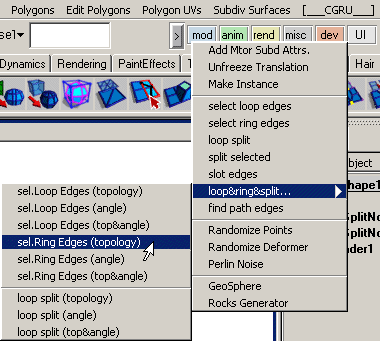
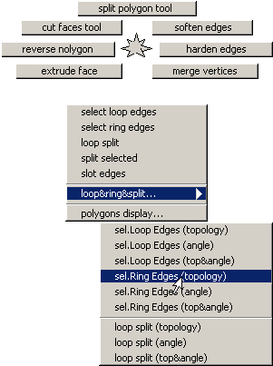
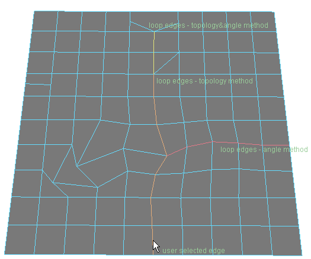
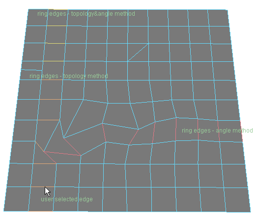
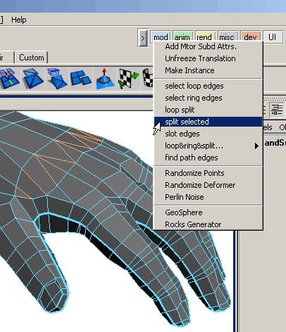
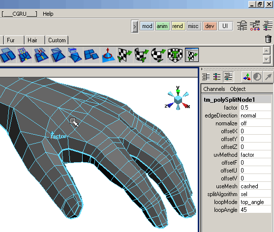
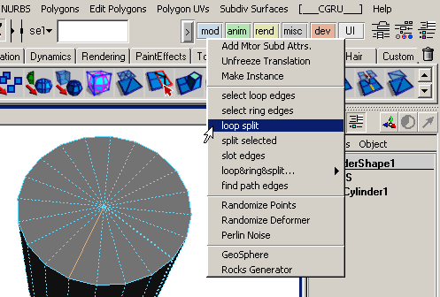
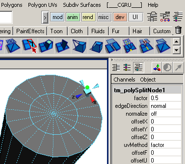
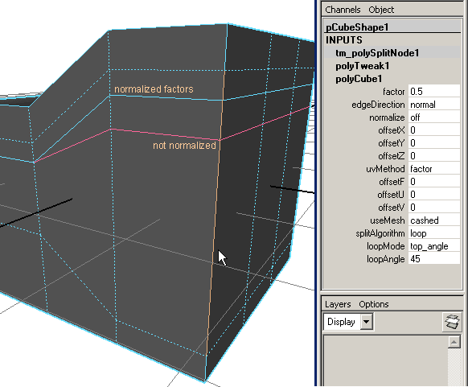

|
|
|
Poly Loop&Ring&Split Tools.
|  | Присутствует три метода поиска loop & ring edges: по топологии, по углу, по топологии и углу. topology method - идет по топологии 4*4, встречает другую топологию - дальше не идет. angle method - ищет ребро по минимальному углу между предидущим и следующим ребром, если минимальный угол больше заданного (по-умолчанию 45deg), то дальше не идет. topology&angle method - идет по топологии 4*4, встречает другую топологию - ищет минимальный угол, потом идет опять по топологии. По-умолчанию polyTools marking menu стоит на "alt" + "p". Но вы можете помтавить свой. Команды для этого marking menu находятся "_CGRU_mod_" категории в Hotkey Editor (Window -> Settings/Preferences -> Hotkeys...). |
 |
Select Loop&Ring Edges:
|  |  |
Command:
help tm_polySelect;
// Result:
Synopsis: tm_polySelect [flags] [String...]
Flags:
-l -loop Int Float
-r -ring Int Float
Int - method: 1 - topology, 2 - angle, 3 - topology∠ Float - angle (in deg); [String...] - operated component (selection as default).
exapmle: tm_polySelect -r 1 45 pCylinderShape1.e[98]; tm_polySelect -l 3 45;
Split Selected Edges:
|  |  |
Split Loop Edges:
|  |  |
Node description:
|  | factor - split edges factor. useMesh - whether to recompute mesh from tm_polySplitNode.inMesh attribute or to use cashed mesh stored in tm_polySplitNode.outMesh. Next 3 attributes requires split recompute to change results. |
Command:
help tm_polySplit;
// Result:
Synopsis: tm_polySplit [flags] [String...]
Flags:
-l -loop Int Float
-s -selected
Int - method: 1 - topology, 2 - angle, 3 - topology∠ Float - angle (in deg); [String...] - operated component (selection as default).
exapmle: tm_polySplit -r 1 45 pCylinderShape1.e[98]; tm_polySplit -l 3 45; tm_polySplit -s;
ATTENTION!
- Doesn't support mesh with many UV sets (yet). The node works with the first UV set only. Other sets will get new UVs with factor 0.5 and this value is not adjustable.
| SourceForge.net Project | Раздел на форуме CGTALK.RU |